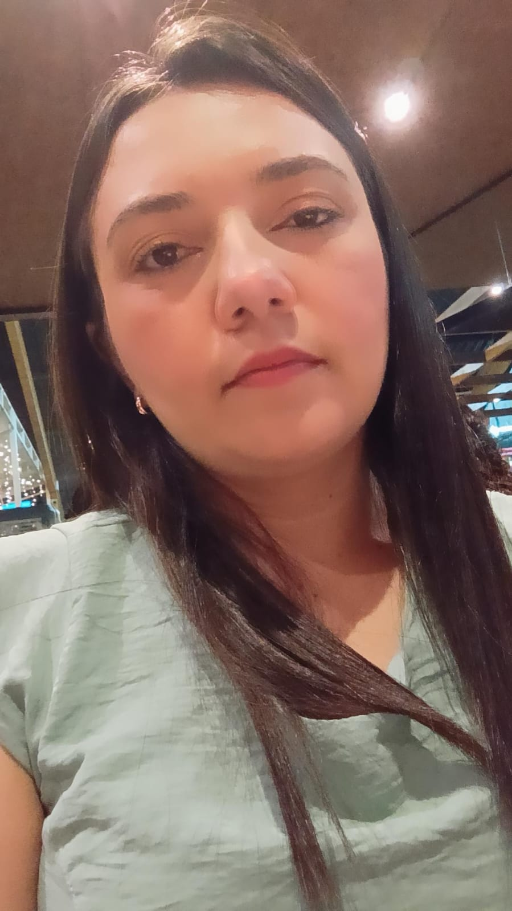

A educação é parte essencial na nossa vida, através dela é possível formar cidadãos e transformar a sociedade, ela é responsável pelo desenvolvimento de habilidades úteis, para a atuação do indivíduo em sociedade.
Leidiane trabalha fora, é mãe, dona de casa, estudante e jovem! Desde cedo tenho o sonho de estudar para poder ter uma vida financeira melhor para mim e para meus familiares. Isso é o sonho de muita gente e o melhor caminho é buscar. Por morar no interior, ser de família humilde, estudar era um grande desafio. Aos vintes anos engravidei, por isso tive que adiar esse sonho por algum tempo. Depois de um ano e meio após o nascimento da minha filha fiz um vestibular e passei para licenciatura em letras inglês e literatura de língua inglesa pelo CEAD-UFPI. As aulas eram todos os finais de semana. Durante o curso na universidade fiz um curso de um ano e meio em uma escola de idiomas, para poder aperfeiçoar o que estava aprendendo na faculdade. Hoje sou formada em Letras Inglês, só pude trabalhar na área por dois meses, depois não consegui mais, lecionar é uma coisa que gosto muito de fazer espero que um dia também possa trabalhar em sala de aula. Atualmente, faço curso de ADS, também me identifico com a tecnologia, é uma coisa apaixonante que você vai descobrindo aos poucos. O sonho continua, estudar para ter uma vida melhor para mim e para meus familiares, agora com uma prioridade a minha filha. Que eu possa ser exemplo de otimismo e perseverança, nunca desistir é a palavra certa.
Gosto de viajar, ficar com a família, assitir filmes e séries, os que mais gosto são de Super Heróis.
Permita que seu estilo seja um reflexo luminoso de sua essência, onde a moda se torna a expressão máxima da elegância interior.
Gosto de praticar atividade física, para mim é como uma terapia, me distrai e me disafia todos os dias, e é isso que me mantem
forte.
Crie hábitos saudáveis, coma bem, durma bem, exercite o seu corpo e a sua mente.
Instagran: leidiane_gaby
LinkedIn: linkedin.com/in/leidiane-montanha
email: leidianemontanha92@gmail.com